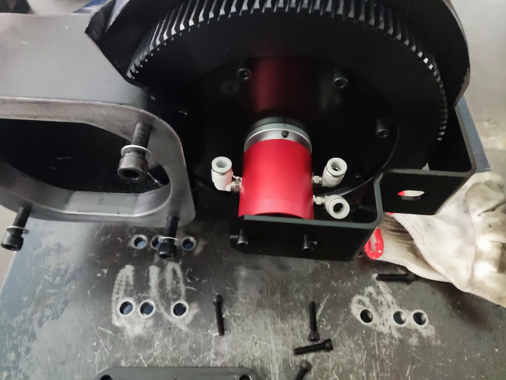
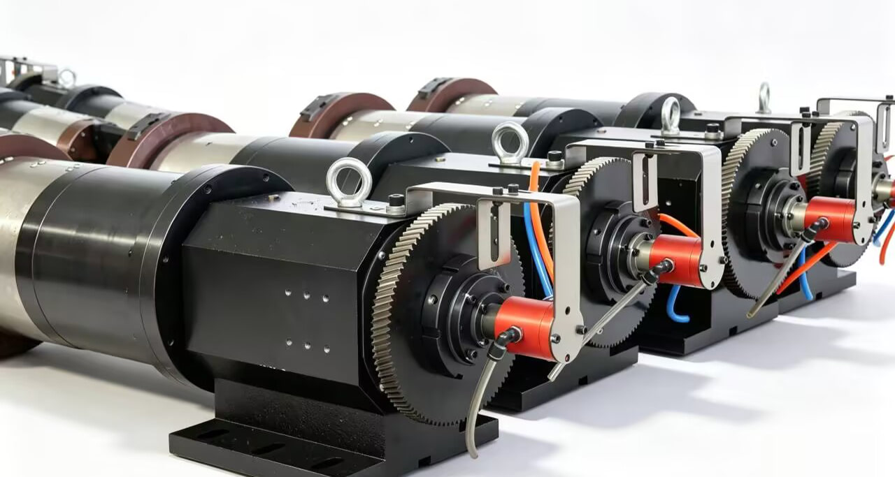

後方チャックへの圧縮空気供給
回転するチャックへ独立した空圧機能を供給
対象： レーザー管切断機の後方チャック空圧系を設計・組み込む装置メーカーおよび技術担当者。
ロータリジョイントは、固定側の圧縮空気供給源と、回転する後方チャックの独立制御機能を接続します。必要流路数は、個別に制御する空圧機能の数に合わせます。
BP-3P-0004およびBP-2P-08-0001は、この用途の標準候補です。現場写真は組込み例を示すもので、写真に写っている製品の正確な型式は特定されていません。

後方チャックへの組込みレーザー管切断機の回転する後方チャックへの圧縮空気供給。
チャックの型式、写真、図面のいずれかがあれば始められます
空圧機能、圧力、回転数が分かる場合は併せてお知らせください。選定に必要な次の情報だけをこちらから確認します。
標準候補
独立2流路または3流路
BP-2P-08-0001とBP-3P-0004は、後方チャックへの圧縮空気供給に使用されています。個別に制御する空圧機能の数と必要な取合いで選びます。
機能から選ぶ
候補を絞る3つのポイント
1. 個別に制御する空圧機能
クランプ、アンクランプなど、個別制御が必要な機能の数を確認します。
2. 分かっている使用条件
圧力、最高回転数、連続回転数が分かる場合はお知らせください。初回のお問い合わせでは未確定でも問題ありません。
3. 取付けの適合
写真や図面があれば、取付スペース、取合い、接続部、ホース方向を確認できます。
参考になる情報
型式提案に役立つ情報
今お持ちの情報だけお送りください。初回のお問い合わせで全項目をそろえる必要はありません。
| お持ちの情報 | 確認できること |
|---|---|
| 空圧機能または回路数 | 2流路・3流路のどちらが合うか |
| 圧力と回転数 | 候補型式の運転条件 |
| チャックの写真または図面 | 取付スペース、取合い、接続部、ホース方向 |
| 既存型式または装置情報 | 近いカタログ型式または特注仕様の出発点 |
プロセスガス・アシストガスには別仕様が必要です
この2型式は後方チャックの圧縮空気用です。プロセスガスやアシストガスの場合は、ガスと使用条件をお知らせください。材質、清浄度、試験内容を個別に確認します。
後方チャックへの組込み事例
後方チャックへの圧縮空気供給を、2枚の現場写真でご覧いただけます。
後部チャック用ロータリージョイントをお探しですか？
チャックの型式、写真、図面のいずれかがあれば始められます。分かる場合は回路数、圧力、回転数もお知らせください。標準型式または特注仕様をご提案し、次に必要な情報だけを確認します。
次のステップ